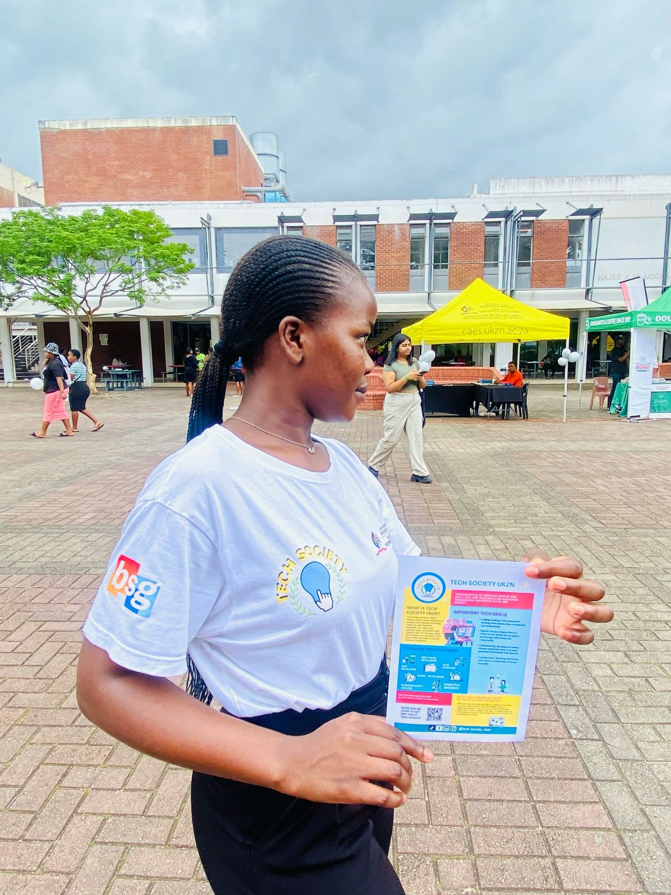
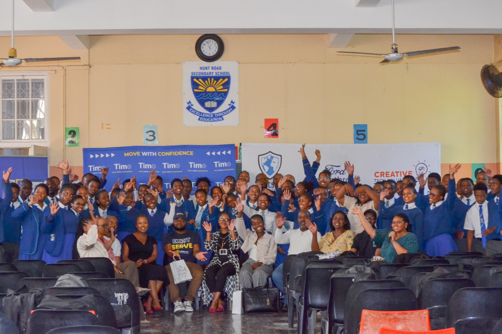
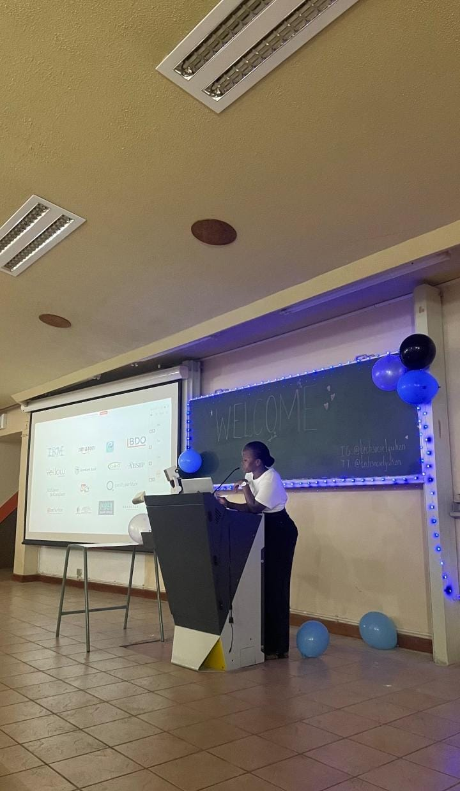

Information Systems & Technology Honours Student · University of KwaZulu-Natal
Aphelele Cele
The Visionary in Technology
I am a pure science matriculant with three distinctions from Thobigunya High School, now a driven and ambitious University of KwaZulu-Natal Information Systems and Technology graduate, currently in my Honours year at the University of KwaZulu-Natal pursuing Honors in Information Systems and Technology under the College of Agriculture, Engineering and Science. I'm passionate about innovation in the technology space, from software development and business analysis to cybersecurity, artificial intelligence, and business intelligence — and I'm venturing into business analysis, where I get to deduce problems, engage stakeholders, and design solutions that make a meaningful impact in the technology industry. Skilled in HTML, CSS, Java, C#, Python, SQL, MySql, Visual Studio, WordPress, Android Studio and C++, I am adept at building and optimizing websites and applications for functionality, responsiveness, and user experience.
A leadership path, one role at a time
Human Resources Director
Earned a certificate of recognition for contributions to the society's people & culture.Dealt with recruiting new executives and sub-committee to the team,following all recruitment processes evaluations and tasks
Tech & Strategies Director- Deputy President
Shaped the society's technical direction and long-term strategy,and became deputy president while overseeing 5 departments and engaging with different compny stakeholders.
President, Tech Society
Leading the society as its female president — a proud milestone after almost five years of involvement in the society.Now leading a society with 500+ members and an executive team with 16 members.
Building at the intersection of strategy and systems
I have a strong foundation in IT and a commitment to staying at the forefront of the latest industry trends and advancements. I'm driven to make a meaningful impact in the technology industry, leveraging creativity, critical thinking, and technical expertise to develop innovative solutions, with a particular focus on the youth in technology and industries.
Beyond the Tech Society, I mentored and tutored with UKZN Residence Life, served as a Supplemental Instruction Leader for MGNT2SM, and worked as an IT Demonstrator for ISTN101. As part of the society, I've also had the opportunity to engage with the MIT AI+X BlendED programme in collaboration with partners in China — an experience that broadened how I think about AI's role across industries and borders.
I believe strongly in education and lifelong learning. Alongside my degree, I've earned additional certificates in HTML and research ethics, and I actively seek out collaboration and networking opportunities that give me access to cutting-edge technologies and industry insight.
Cloud Data Privacy Governance Practices in the Public Sector
As a technology student, I have watched public sector institutions move critical services onto cloud infrastructure faster than the governance frameworks meant to protect citizens' data can keep pace. That gap is exactly where I want to work, it sits at the crossroads of technology, policy, and public trust, and it's a natural extension of my interest in business analysis: understanding a real, high-stakes problem well enough to help design a workable solution.
This research also lets me combine the analytical and technical sides of my degree, examining how data privacy is governed once information leaves an organisation's own servers, and what that means for accountability, compliance, and public confidence in government-run digital services,because in the end technical does not equal to governed, and that is where my research comes in to bridge the gap between technology and policy.
- Cloud adoption in government is accelerating, often ahead of policy.
- Citizens' personal data deserves clear, enforceable governance.
- It bridges my technical training with a genuine interest in business analysis and policy impact.
Recognition along the way
Moments from Tech Society & campus life



